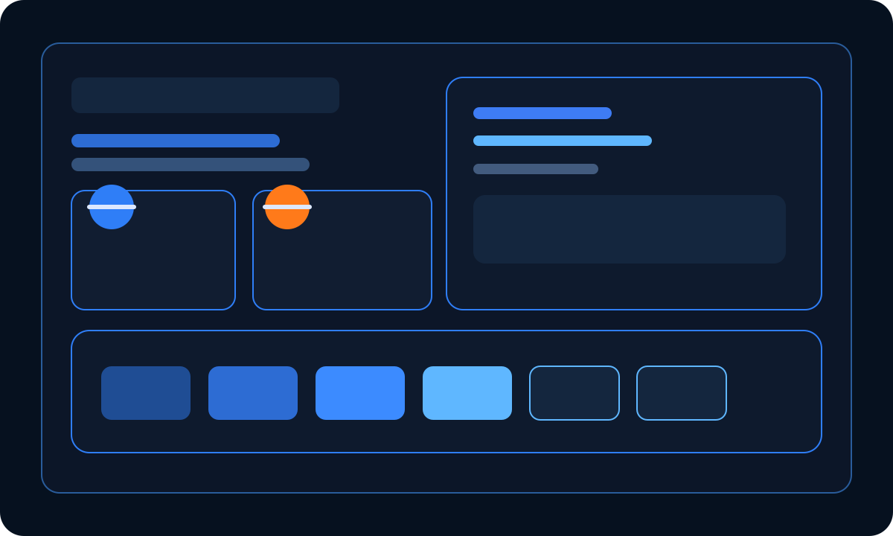
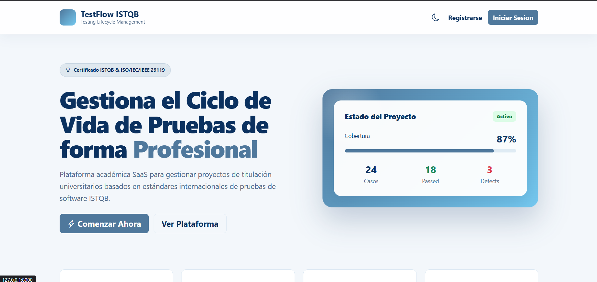

Qué me impulsa
Soy un desarrollador que disfruta construir soluciones con propósito, entender los sistemas de forma profunda y mejorar continuamente. Me interesa la calidad, la automatización, la trazabilidad y el valor real que aporta el software.
Desarrollador semisenior • Backend • Calidad • Cloud
Me interesa crear aplicaciones útiles, entender cómo funcionan los sistemas por dentro, trabajar con bases de datos, servidores, despliegues y servicios en la nube.
$ python manage.py test
✓ Tests ejecutados correctamente
$ docker compose up -d
✓ Servicio desplegado en contenedor
$ psql -d appdb
✓ Conexión con PostgreSQL establecida
Sobre mí
Soy un desarrollador que disfruta construir soluciones con propósito, entender los sistemas de forma profunda y mejorar continuamente. Me interesa la calidad, la automatización, la trazabilidad y el valor real que aporta el software.
Me gusta trabajar con orden, documentar decisiones y pensar en escalabilidad desde el inicio. He trabajado con tecnologías web, bases de datos, APIs y despliegues, y sigo fortaleciendo mi conocimiento en arquitectura, testing y cloud.
Habilidades técnicas
Proyecto destacado

Experiencia profesional destacada
Desarrollé una plataforma web para la gestión bibliográfica basada en el estándar MARC 21 para la Facultad de la Educación, el Arte y la Comunicación de la Universidad Nacional de Loja. Esta solución reemplazó procesos manuales o limitados por una aplicación web completa, orientada a modernizar la catalogación, mejorar la organización de registros y fortalecer la trazabilidad de la información.
Mi participación incluyó el análisis, diseño, desarrollo e implementación del sistema, así como la construcción de la arquitectura completa, los módulos principales y la lógica de negocio necesaria para gestionar registros bibliográficos con criterios de calidad, seguridad y escalabilidad.
Mi aporte
Entendí necesidades reales de una institución pública y las traduje en soluciones concretas.
Definí estructuras y flujos de trabajo apoyados en criterios de claridad y escalabilidad.
Construí módulos y interfaces que facilitaron la gestión de registros bibliográficos.
Validé el sistema, optimicé consultas y documenté la solución para su puesta en marcha.
Principales logros
Lo que aprendí
Fortalecí conocimientos en ingeniería de software, arquitectura MVC/MVT, desarrollo con Django, PostgreSQL, modelado de datos, gestión documental, trabajo con estándares internacionales, resolución de problemas reales, comunicación con usuarios y desarrollo profesional.
Proyectos destacados

Gestión de pruebas, casos de prueba, defecto y trazabilidad para equipos de calidad.

Experiencia y formación
Construcción de soluciones con enfoque en legibilidad, reutilización y mantenimiento.
Fortalecimiento de prácticas de testing, trazabilidad y mejora continua.
Diseño de APIs, lógica de negocio y modelos de datos robustos.
Interés activo por despliegues, infraestructura básica y operación de aplicaciones.
Lo que estoy aprendiendo
Mi forma de trabajar
Entender el problema antes de escribir código.
Elegir claridad, prueba y mantenimiento por encima de atajos.
Reducir incertidumbre y facilitar el crecimiento del sistema.
Explorar, investigar y validar nuevas ideas con criterio.
Buscar eficiencia, orden y mejores prácticas en cada iteración.
Construir pensando en el mantenimiento y el crecimiento futuro.
Contacto
Si buscas a alguien con interés por backend, calidad, bases de datos, cloud y mejora continua, me encantaría conversar.